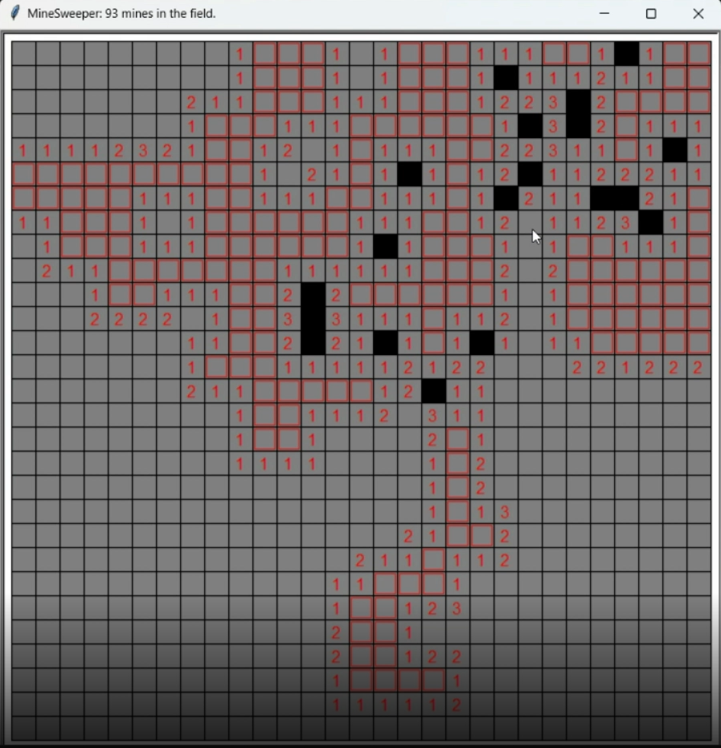

About the game:
This is the classic game MineSweeper!
I added a way to change the difficulty in the code.
Here's a picture and a video of my game:

Some Strategies for high level minesweeper are:
If you are forced to guess, make the guess which has the least risk.
If you are forced to guess, make a guess that will actually help you if it turns out to be right.
Don't just choose the first valid move you notice, choose the best move available.
Avoid the walls until you have eaten out the center of the map.
Imagine and already be planning for the states which could result from your current move.
Your best chance of finding an opening on the first move is in a corner, then on an edge, then in the middle.
If you don't know all the moves, then trying to go faster actually makes you worse. So go slow.
You should play slower until you notice the number of mistakes you make go down.
Always start from the same position.